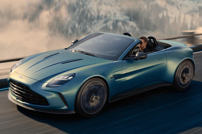
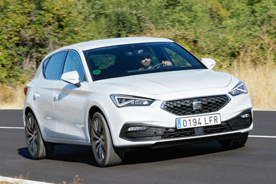
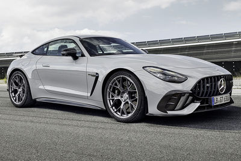

Listado de vehiculos
A continuación te mostramos el listado de vehiculos disponibles en nuestra empresa, cada uno con sus características. Si quieres alquilar alguno de ellos, pulsa el botón. Los colores indican las categorias de precios.
Aston Martin Vantage Roadster
Aston Martin presenta el Vantage Roadster 2025 (665 CV) o lo que es lo mismo, la versión de carrocería descapotable del Vantage Coupe.
Listado de características
- 665cv de potencia
- V8 de 3982cc
- Llantas de 21 pulgadas
- Techo panorámico

SEAT Leon 5p
El SEAT León es un turismo que se comercializa con carrocería «compacta» de cinco puertas de 4,37 metros de longitud y con una familiar, o Sportstourer, de 4,64 metros.
Listado de características
- 116cv
- 1500cc
- Llantas de 18 pulgadas
- Cambio manual

Mercedes.AMG GT Coupé
El SEAT León es un turismo que se comercializa con carrocería «compacta» de cinco puertas de 4,37 metros de longitud y con una familiar, o Sportstourer, de 4,64 metros.
Listado de características
- 412cv de potencia
- V6 de 3000cc
- Llantas de 21 pulgadas
- Hibrido enchufable
